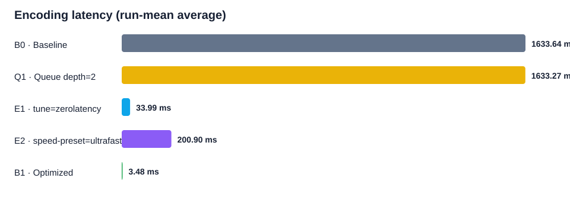
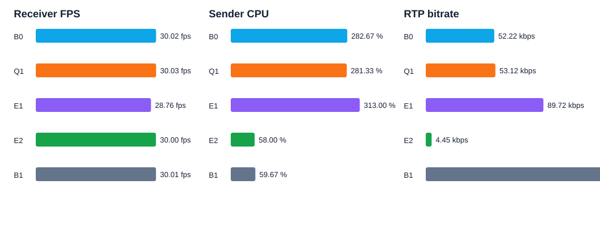

Raspberry Pi 4 · 640×480 16-bit PNG 971장 · 30 FPS · x264enc · RTP/UDP
E2E 지연 제외: RTP 메타데이터와 디코더 PTS의 매칭률이 95% 기준을 충족하지 못했습니다. 잘못된 프레임 ID 기반 손실률과 E2E 수치는 보고하지 않고, 송신 성공 수와 디코드 수의 직접 차이를 사용했습니다.
| ID | 설정 | n | Encode avg ms | Encode P95 ms | Pre-Q avg ms | Stream-Q avg ms | TX FPS | RX FPS | Frame gap % | Pi CPU % | Pi RSS MiB | RTP kbps |
|---|---|---|---|---|---|---|---|---|---|---|---|---|
| B0 | Baseline | 3 | 1633.64 | 1705.28 | 0.82 | 0.23 | 30.00 | 30.02 | 0.24 | 282.67 | 177.13 | 52.22 |
| Q1 | Queue depth=2 | 3 | 1633.27 | 1705.59 | 0.74 | 0.25 | 30.00 | 30.03 | 0.21 | 281.33 | 177.58 | 53.12 |
| E1 | tune=zerolatency | 3 | 33.99 | 42.83 | 0.76 | 0.24 | 30.00 | 28.76 | 0.00 | 313.00 | 101.35 | 89.72 |
| E2 | speed-preset=ultrafast | 3 | 200.90 | 200.99 | 0.03 | 0.04 | 30.00 | 30.00 | 0.00 | 58.00 | 91.69 | 4.45 |
| B1 | Optimized | 3 | 3.48 | 4.51 | 0.02 | 0.04 | 30.00 | 30.01 | 0.00 | 59.67 | 83.78 | 228.87 |


| Stage | B0 avg ms | B0 P95 ms | B1 avg ms | B1 P95 ms |
|---|---|---|---|---|
| Capture processing | 13.45 | 22.19 | 10.05 | 10.10 |
| Preprocess queue wait | 0.82 | 4.48 | 0.02 | 0.03 |
| Preprocess processing | 0.46 | 0.62 | 0.45 | 0.45 |
| Streaming queue wait | 0.23 | 1.16 | 0.04 | 0.05 |
| Streaming submit | 0.96 | 4.04 | 0.18 | 0.19 |
| Encoding | 1633.64 | 1705.28 | 3.48 | 4.51 |
| Metric | Unit | B0 | B1 | Change |
|---|---|---|---|---|
| Capture processing mean | ms | 13.45 | 10.05 | -25.29% |
| Capture processing P95 | ms | 22.19 | 10.10 | -54.47% |
| Preprocess queue mean | ms | 0.82 | 0.02 | -97.15% |
| Preprocess queue P95 | ms | 4.48 | 0.03 | -99.38% |
| Encoding mean | ms | 1633.64 | 3.48 | -99.79% |
| Encoding P95 | ms | 1705.28 | 4.51 | -99.74% |
| Preprocess mean | ms | 0.46 | 0.45 | -2.83% |
| Preprocess P95 | ms | 0.62 | 0.45 | -27.40% |
| Streaming queue mean | ms | 0.23 | 0.04 | -81.57% |
| Streaming queue P95 | ms | 1.16 | 0.05 | -96.05% |
| Streaming submit mean | ms | 0.96 | 0.18 | -81.49% |
| Streaming submit P95 | ms | 4.04 | 0.19 | -95.38% |
| Receiver FPS | fps | 30.02 | 30.01 | -0.04% |
| Frame gap | % | 0.24 | 0.00 | -100.00% |
| Sender CPU | % | 282.67 | 59.67 | -78.89% |
| Sender max RSS | MiB | 177.13 | 83.78 | -52.70% |
| RTP bitrate | kbps | 52.22 | 228.87 | 338.29% |
B0: B0.mp4 / B1: B1.mp4